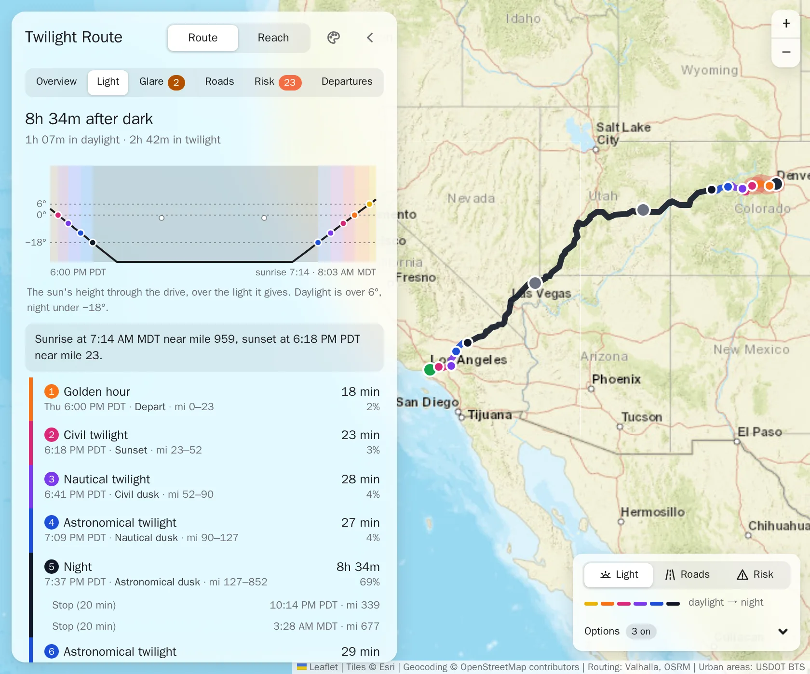
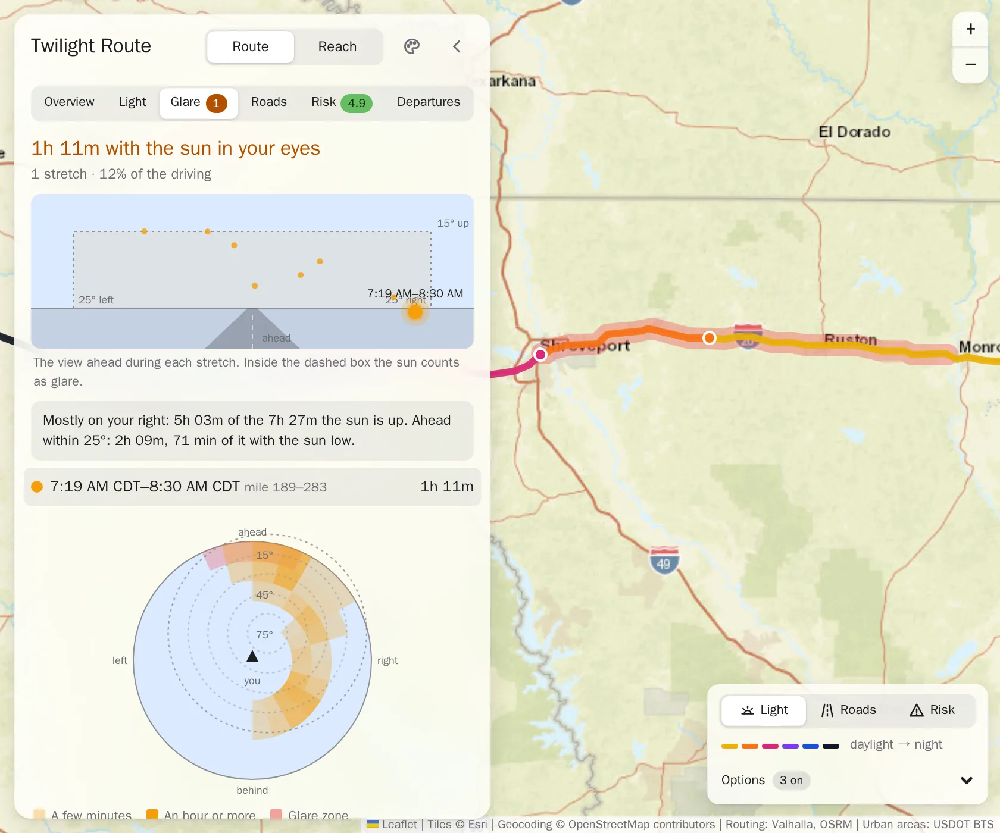
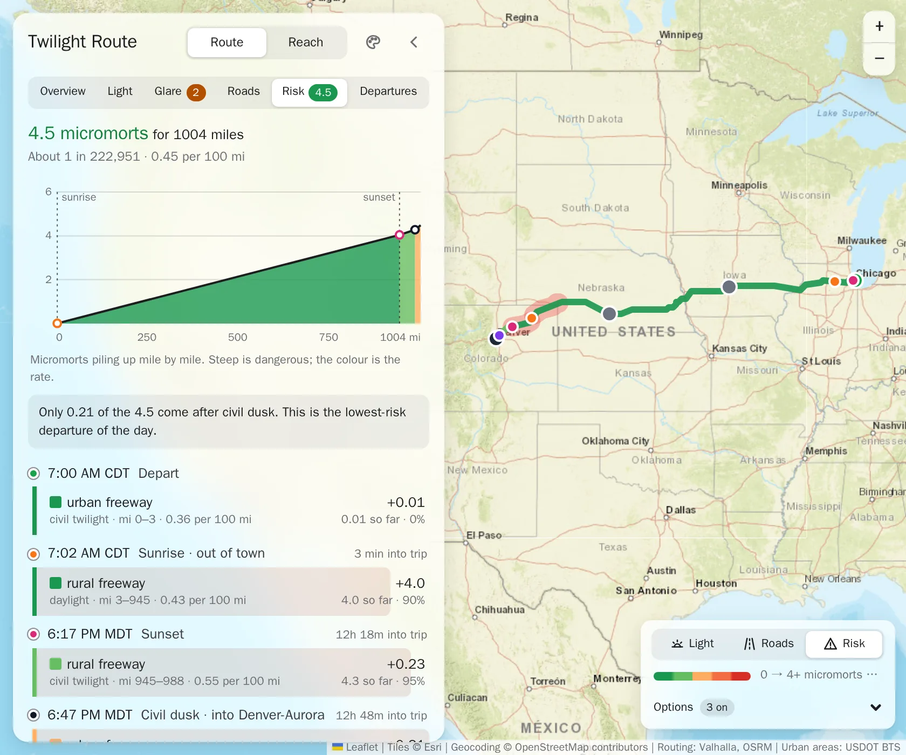
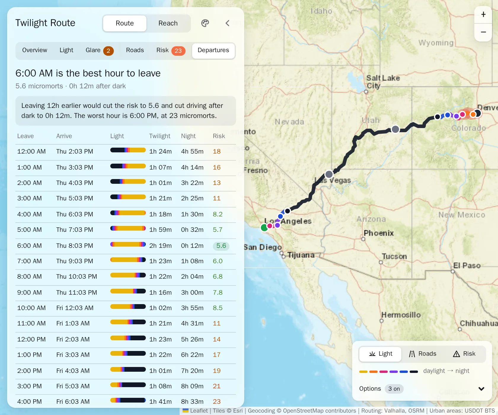
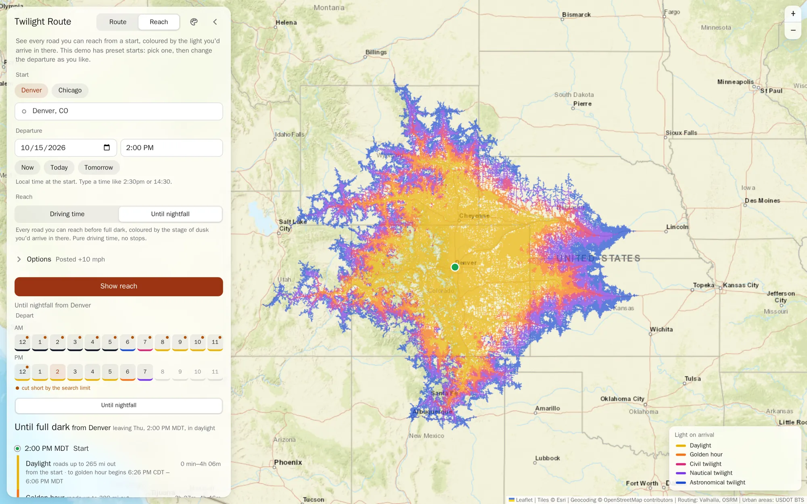
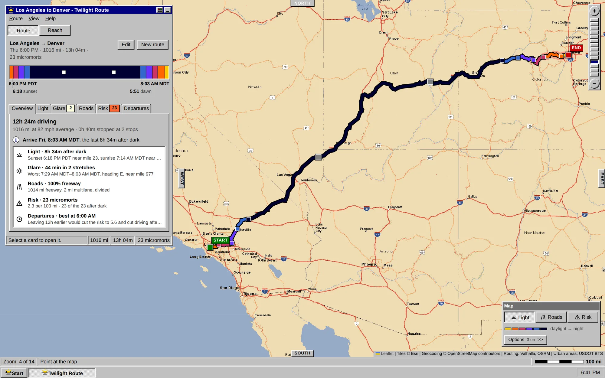

Twilight Route lays a US road trip against the sun: when it sets and rises along your way, when it sits low in your eyes, and how much riskier the miles get after dark. Then it helps you pick a better time to leave.
Golden hour and sunset, then the three stages of twilight as the sky dims: civil (the last useful daylight), nautical (the horizon fades) and astronomical (the last glow), and then night. Each is worked out for every mile at the moment you'd drive it, on that place's own clock, and drawn on the road.
Seattle to San Francisco at 8 AM: 9h 50m of daylight, sunset at 6:30 PM near mile 742, then an hour of twilight before you arrive.

A low sun close to straight ahead is the glare that hides brake lights and lane lines. Twilight Route finds every stretch where the sun is under 15° and within 25° of your heading, highlights it on the map, and shows where the sun sits in the view ahead.
Dallas to Atlanta at 5 AM: on I-20 the sun sits low in the windshield for 1h 11m, from Shreveport toward Monroe.

Each mile gets a fatality rate for its setting (rural or urban), the kind of road, and whether you drive it in daylight, civil twilight or after civil dusk. The Risk tab adds them up as you go, in micromorts: one-in-a-million chances of dying. For scale, US driving as a whole averages about 1.3 per 100 miles.
Chicago to Denver at 7 AM: 4.5 micromorts over 1,004 miles, about 1 in 223,000. Only 0.21 of it comes after civil dusk, on the last miles into Denver.

The same drive, leaving at every hour of the day, side by side: when you'd arrive, how long you'd spend in twilight and in night, and the risk. Pick a row and the whole plan moves to that time.
The Los Angeles to Denver drive at the top of this page: 6 PM is the worst hour of the day, at 23 micromorts. Leaving at 6 AM cuts it to 5.6, with only 12 minutes after dark.

Reach turns it around: from a start and a time, every road you could drive to, coloured by the light you'd arrive in there. Ask for a number of hours, or for everywhere you can get before full dark falls, and change the hour with one tap.
Denver at 2 PM: roads up to about 265 miles out are reached in daylight; beyond that, the colour shows the stage of dusk you'd arrive in.

One switch turns the whole app into a mid-90s desktop: window chrome, a recoloured street map, and the same light underneath.

Pick one of five long drives, then move the departure around and watch the light, the glare and the risk follow.